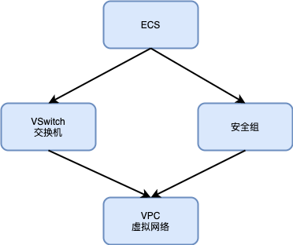

6.1 ECS 云主机
本文介绍如何使用 Kusion 创建一台 ECS 实例，以及必须的其他关联资源。
6.1.1 准备条件
在开始之前，您还需要一个阿里云账号和访问密钥（AccessKey）。 请在阿里云控制台中的 AccessKey 管理页面 上创建和查看您的 AccessKey。
本节用到的阿里云资源在 Konfig 中的 base.pkg.kusion_models.clouds.alicloud 包定义（还在开发中，查看 代码）。
要创建一个 ECS 机器，还需要创建对应的安全组和交换机，而安全组和交换机需依赖一个虚拟网络，它们的关系如图所示：

下面我们将通过 Kusion 配置代码化的方式构建以上需要的资源。
6.1.2 生成专有网络
专有网络 VPC（Virtual Private Cloud）是用户基于阿里云创建的自定义私有网络, 不同的专有网络之间二层逻辑隔离，用户可以在自己创建的专有网络内创建和管理云产品实例，比如 ECS、SLB、RDS 等。详细专有网络 VPC 创建信息查看 阿里云 VPC 文档 。
专有网络对应 base.pkg.kusion_models.clouds.alicloud 包定义的 AlicloudVPC 模型（TODO：参考链接）：
schema AlicloudVPC:
name?: str
cidr_block?: str
...
目前只使用到 name 名称字段和 cidr_block IPv4 网段字段。然后初始化一个名称为 alicloud_vpc，子网地址为 172.16.0.0/16 的专有网络。
专业网络配置参数初始化代码如下：
_vpc = alicloud.AlicloudVPC {
name = "alicloud_vpc"
cidr_block = "172.16.0.0/16"
}
有了专有网络配置参数之后还需要通过阿里云提供的 Terraform Provider 实例化，类型 base.pkg.kusion_models.commons.provider_resource 包定义。对应的 Kusion 代码如下：
vpc = provider.Provider {
providerName = "alicloud"
resourceType = "alicloud_vpc"
providerData = _vpc
providerMeta = {
region = "cn-beijing"
access_key = "L****************3"
secret_key = "x****************o"
}
}
其中 alicloud 和 alicloud_vpc 指定阿里云的 VPC 专有网络类型的资源；_vpc 是对应上面专业网络的配置；对应区域为 cn-beijing，还有对应的 AccessKey 信息。
6.1.3 生成交换机（VSwitch）
交换机（vSwitch）是组成专有网络的基础网络模块，用来连接不同的云资源。成功创建交换机后，您可以在交换机中创建云资源、绑定自定义路由表或者绑定网络 ACL。详细交换机使用信息查看 阿里云使用交换机文档 。
交换机对应 base.pkg.kusion_models.clouds.alicloud 包定义的 AlicloudVswitch 模型（TODO：参考链接）：
schema AlicloudVswitch:
vpc_id: str
name?: str
availability_zone?: str
cidr_block: str
...
目前需要的字段有 vpc_id 对应的专有网络、name 名称字段和 availability_zone 可用区、cidr_block IPv4 网段
初始化交换机配置参数如下：
_vswitch = alicloud.AlicloudVswitch {
vpc_id = "$kusion_path.registry.terraform.io/aliyun/alicloud.alicloud_vpc.alicloud_provider.alicloud_vpc.id"
name = "alicloud_vswitch"
availability_zone = "cn-beijing-b"
cidr_block = "172.16.0.0/21"
}
需要注意的是 vpc_id 和前面创建的专有网络有关联关系。然后通过阿里云的 Provider 进行资源实例化：
vswitch = provider.Provider {
providerDependOn = [
"registry.terraform.io/aliyun/alicloud.alicloud_vpc.alicloud_provider.alicloud_vpc"
]
providerName = "alicloud"
resourceType = "alicloud_vswitch"
providerData = _vswitch
providerMeta = {
region = "cn-beijing"
access_key = "L****************3"
secret_key = "x****************o"
}
}
通过 providerDependOn 定义交换机创建依赖专有网络的创建的依赖关系。其他的可用区和 AccessKey 等参数和专有网络实例化类似。
6.1.4 生成安全组（SecurityGroup）
安全组是 ECS 实例的虚拟防火墙，用于设置单个或多个 ECS 实例的网络访问控制，每台 ECS 实例至少需要属于一个安全组。详细安全组创建信息查看 阿里云安全组创建文档 。
交换机对应 base.pkg.kusion_models.clouds.alicloud 包定义的 AlicloudSecurityGroup 模型（TODO：参考链接）：
schema AlicloudSecurityGroup:
vpc_id?: str
name?: str
description?: str
...
目前需要的字段有 vpc_id 对应的专有网络、name 名称字段和 description 描述字段。
初始化安全组配置参数如下：
#create secutirygroup
_security_group = alicloud.AlicloudSecurityGroup {
vpc_id = "$kusion_path.registry.terraform.io/aliyun/alicloud.alicloud_vpc.alicloud_provider.alicloud_vpc.id"
name = "alicloud_security_group"
description = "alicloud-security-group"
}
需要注意的是 vpc_id 和前面创建的专有网络有关联关系。然后通过阿里云的 Provider 进行资源实例化：
security_group = provider.Provider {
providerDependOn = [
"registry.terraform.io/aliyun/alicloud.alicloud_vpc.alicloud_provider.alicloud_vpc"
]
providerName = "alicloud"
resourceType = "alicloud_security_group"
providerData = _security_group
providerMeta = {
region = "cn-beijing"
access_key = "L****************3"
secret_key = "x****************o"
}
}
通过 providerDependOn 定义安全组创建依赖专有网络的创建的依赖关系。其他的可用区和 AccessKey 等参数和专有网络实例化类似。
6.1.5 生成 ECS 实例
云服务器 ECS（Elastic Compute Service）是阿里云提供的性能卓越、稳定可靠、弹性扩展的 IaaS（Infrastructure as a Service）级别云计算服务。详细云服务器信息查看 阿里云实例创建 。
交换机对应 base.pkg.kusion_models.clouds.alicloud 包定义的 AlicloudInstance 模型（TODO：参考链接）：
schema AlicloudInstance:
availability_zone?: str
vswitch_id?: str
security_groups: [str]
image_id: str
instance_type: str
instance_name?: str
password?: str
...
其中 vswitch_id 引用交换机 id 字段，availability_zone 引用安全组 id 字段（依赖安全组的创建）。image_id 为镜像的 ID、instance_type 为机器的类型、instance_name 为机器的名字、password 是可选的参数。
初始化 ECS 配置参数如下：
_instance = alicloud.AlicloudInstance {
availability_zone = "cn-beijing-b"
vswitch_id = "$kusion_path.registry.terraform.io/aliyun/alicloud.alicloud_vswitch.alicloud_provider.alicloud_vswitch.id"
security_groups = [
"$kusion_path.registry.terraform.io/aliyun/alicloud.alicloud_security_group.alicloud_provider.alicloud_security_group.id"
]
instance_type = "ecs.n2.small"
image_id = "ubuntu_18_04_64_20G_alibase_20190624.vhd"
instance_name = "kusion-alicloud-instance"
password = "Demo1234fd"
}
需要注意的是 vswitch_id 和 security_groups 等配置对其他资源的依赖关系。然后通过阿里云的 Provider 进行资源实例化：
instance = provider.Provider {
providerDependOn = [
"registry.terraform.io/aliyun/alicloud.alicloud_vswitch.alicloud_provider.alicloud_vswitch",
"registry.terraform.io/aliyun/alicloud.alicloud_security_group.alicloud_provider.alicloud_security_group"
]
providerName = "alicloud"
resourceType = "alicloud_instance"
providerData = _instance
providerMeta = {
region = "cn-beijing"
access_key = "L****************3"
secret_key = "x****************o"
}
}
通过 providerDependOn 定义安全组创建依赖专有网络的创建的依赖关系。其他的可用区和 AccessKey 等参数和专有网络实例化类似。
6.1.6 执行 Apply
执行 kusion apply 命令创建资源：

然后运行 ssh root@<publicip>，并输入密码来访问 ECS 实例。